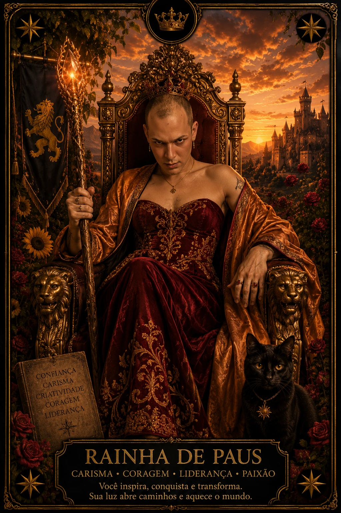

A Corte mostra como uma força aprende, busca, acolhe e conduz
Pajem, Cavaleiro, Rainha e Rei aparecem em Paus, Copas, Espadas e Ouros. Podem representar uma pessoa, mas também um papel, uma atitude, um estágio de maturidade ou a forma de lidar com uma situação.
✦Comece pela atitude da figura; depois acrescente a linguagem do naipe.

RAINHA DE PAUS · DOMÍNIO INTERIOR
Cartas
16
Figuras
4
Naipes
4
Orientação
Direta
MAIS DO QUE PERSONAGENS
A Corte descreve modos de se relacionar com uma energia
Uma figura pode apontar para alguém envolvido, mas essa não é a única possibilidade. Ela também pode mostrar a atitude que você assume, uma qualidade necessária ou o estágio em que um processo se encontra.
Para decidir, observe a pergunta, a posição e as cartas vizinhas. Uma posição chamada “recurso pessoal” favorece leitura como atitude; uma posição chamada “apoio disponível” pode sugerir um papel exercido por alguém — sem afirmar pensamentos secretos.
QUATRO MOVIMENTOS
Da descoberta à responsabilidade
P
Pajem
Aprende, pergunta, experimenta e recebe mensagens ligadas ao naipe.
C
Cavaleiro
Move, procura, defende e leva a energia em direção a um objetivo.
R
Rainha
Internaliza, acolhe, amadurece e sustenta a qualidade por dentro.
K
Rei
Organiza, direciona, lidera e assume consequências no mundo externo.
QUATRO FIGURAS · QUATRO NAIPES
Significado das 16 Figuras da Corte
Compare a mesma figura nos quatro naipes para perceber o que permanece na atitude e o que muda no campo da experiência.
P
QUATRO NAIPES
Pajem · Curiosidade, mensagem e começo do aprendizado
Curiosidade, mensagem e começo do aprendizado. Pode mostrar uma atitude aberta a experimentar e receber informação.
Qual modo de agir, sentir, pensar ou construir a carta convida a desenvolver?
02
Um papel
Que função está sendo exercida: aprendiz, mensageira, agente, cuidadora ou liderança?
03
Um estágio
O tema está começando, avançando, amadurecendo internamente ou sendo conduzido?
04
Uma pessoa
Alguém pode expressar essas qualidades no contexto, sem que a carta prove identidade ou intenção.
SÍMBOLOS, NÃO LIMITES
Rainha e Rei não definem gênero
Qualquer pessoa pode expressar a receptividade madura da Rainha ou a direção responsável do Rei. As figuras descrevem modos simbólicos de relação com a energia, não uma identidade obrigatória.
Também não existe uma hierarquia simples em que uma figura seja “melhor” que outra. O Pajem pode ser exatamente a curiosidade necessária; o Rei pode se tornar controle excessivo.
Atitude antes do rótuloObserve função, contexto e relação
DÚVIDAS FREQUENTES
Como reconhecer o papel da Corte
Toda Figura da Corte representa uma pessoa?
Não. Ela pode mostrar pessoa, atitude, papel, estágio ou qualidade. A posição e a pergunta ajudam a escolher a leitura mais coerente.
Posso descobrir a aparência de alguém pela carta?
Evite usar gênero, aparência ou elemento como identificação literal. Isso cria certezas que a imagem não pode comprovar.
Como diferenciar Rainha e Rei?
Como ponto de partida, a Rainha amadurece e sustenta a qualidade por dentro; o Rei organiza e direciona essa qualidade no campo externo. Ambas podem ser recurso ou desafio.